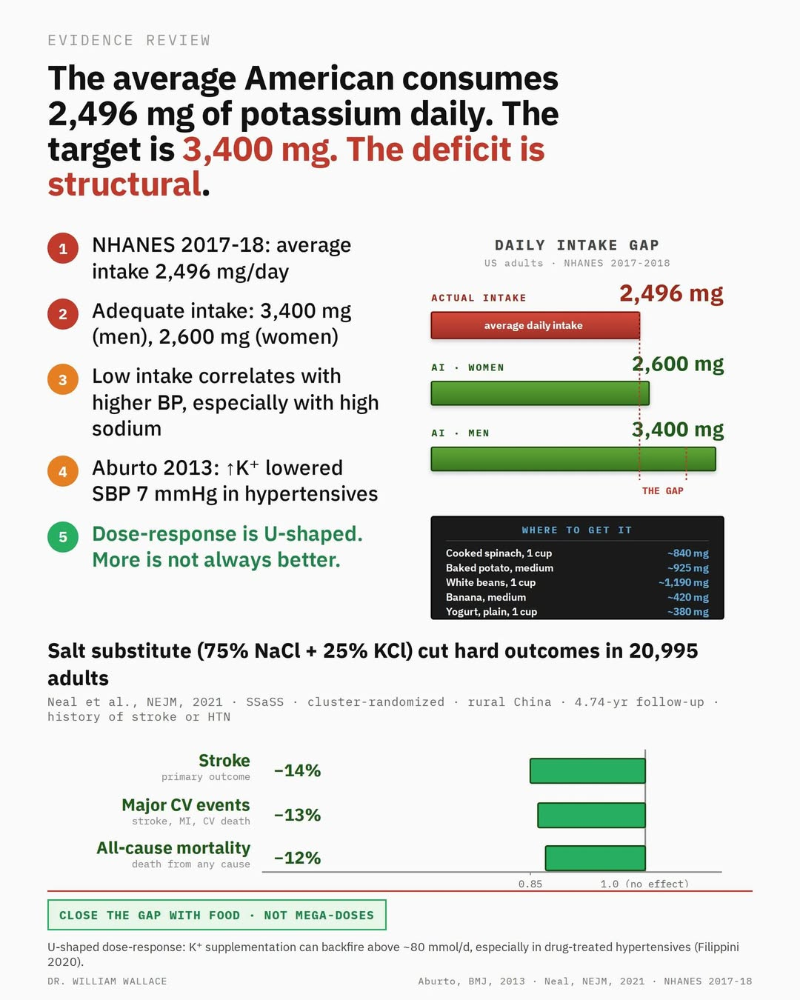

Video: potassium may be as important as sodium for blood pressure
Louis shares a video noting newer studies suggest potassium is as important as sodium for blood pressure control. No details are given in the post.
A shared post notes average potassium intake (about 2,500 mg) falls short of the Adequate Intake (3,400 mg men, 2,600 mg women). A 2013 BMJ review of 22 randomized trials found about 3.5 mmHg lower systolic BP with more potassium, roughly 7 mmHg at 90-120 mmol/day.
Most Americans consume about 2,500 mg of potassium per day. The Adequate Intake from the National Academies is 3,400 mg for men and 2,600 mg for women. That gap is one of the most consistent dietary patterns in the NHANES record going back two decades.
Potassium and sodium work as opposing forces in your body. Sodium pulls water into the bloodstream and tightens vascular tone. Potassium does the opposite. It signals the kidneys to excrete sodium, relaxes vascular smooth muscle, and supports the membrane gradient your nerves and heart depend on. Most people are eating too much of one and not enough of the other.
The intervention data is strong in people who already have hypertension. A 2013 systematic review in BMJ pooled 22 randomized trials. Increased potassium intake lowered systolic blood pressure by about 3.5 mmHg on average, and by roughly 7 mmHg at intakes of 90 to 120 mmol per day in hypertensive adults. Across 11 cohort studies covering 127,000 people, higher potassium intake was associated with about 24% lower stroke risk. The effect was specific to people with elevated blood pressure. Normotensive adults did not show the same shift.
The most striking trial is the Salt Substitute and Stroke Study, published in NEJM in 2021. Nearly 21,000 rural Chinese adults with a history of stroke or hypertension switched from regular salt to a blend of 75% sodium chloride and 25% potassium chloride. Over nearly five years of follow-up, the substitute group had 14% fewer strokes, 13% fewer major cardiovascular events, and 12% lower all-cause mortality. Clinical hyperkalemia rates were not significantly different between groups in this population. This is one of the few dietary interventions with hard mortality data at this scale.
The U-curve matters. A 2020 dose-response meta-analysis in JAHA modeled 32 randomized trials and found that the blood-pressure-lowering effect plateaus above roughly 30 mmol per day of supplementation and can reverse above about 80 mmol per day, particularly in people on antihypertensive drugs. More potassium is not linearly better. The benefit lives in closing the gap, not in mega-dosing.
The cleanest path is food. A cup of cooked spinach gives you about 840 mg. A medium baked potato about 925 mg. A cup of white beans about 1,190 mg. A medium banana about 420 mg. A cup of plain yogurt about 380 mg. Two or three of these in a day closes the gap most people are walking around with.
One important caveat. If you have kidney disease, are taking potassium-sparing diuretics, ACE inhibitors or ARBs, or are otherwise at risk for hyperkalemia, this isn't a generic green light. Talk to your physician before changing intake substantially.
Aburto et al., BMJ, 2013
Neal et al., N Engl J Med, 2021
Filippini et al., J Am Heart Assoc, 2020
NHANES 2017-2018; NASEM 2019